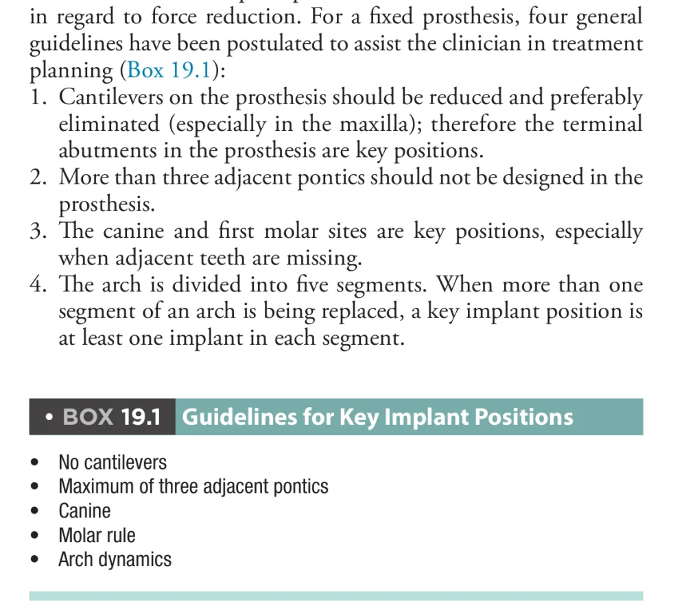
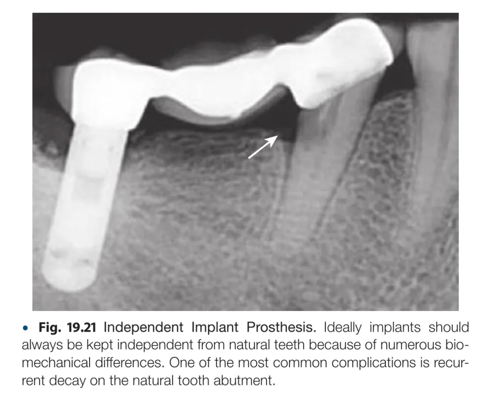

نسخه استخراجشده؛ ترجمه یا تأیید علمی انجام نشده است. وضعیت: captured
این یونیت با یک نقد تاریخی آغاز میشود — و آن نقد، کل منطق طرح درمان مدرن را میسازد.
ماجرا از اینجا شروع میشود: «در گذشته، طرحریزی درمان در دندانپزشکی ایمپلنت عمدتاً با حجم استخوان موجود در نواحی بیدندان هدایت میشد (یعنی طرحریزی استخوانمحور). در نتیجه، ایمپلنتها در نواحیای قرار میگرفتند که استخوان وجود داشت، ولی نه لزوماً در بهترین موقعیت برای بازتوانی پروتزی.»
و پیامدش: «بهدلیل موقعیتیابی غیرایدهآل، پروتزهای غیرمتعارفی حاصل میشد که به مشکلات بیومکانیکی چشمگیر میانجامید.»
به رابطهی علّی دقت کن: استخوان موقعیت را دیکته میکرد ← موقعیت شکل پروتز را دیکته میکرد ← پروتز غیرمتعارف بار غیرمتعارف میساخت. یک تصمیم جراحی، سه مرحله بعدتر به یک عارضهی بیومکانیکی تبدیل میشد.
و فاز دوم که جای آن را گرفت:
«فاز تاریخی دوم طرحریزی درمان از آن پس بر پایهی زیبایی و بیومکانیک ایدهآل توسعه یافت. در این طرحواره، موقعیت ایمپلنتها عمدتاً توسط دندانهایی (پروتزی) که جایگزین میشوند دیکته و کنترل میشود.»
و جملهای که تفاوت را قطعی میکند:
«اگر استخوان موجود ناکافی یا در موقعیت غیرایدهآل باشد، افزایش استخوان انجام میشود تا حجم استخوان برای قرار دادن ایدهآلتر ایمپلنتها افزایش یابد.»
این وارونگی کامل است. در طرح استخوانمحور، استخوان یک محدودیت بود که موقعیت را تعیین میکرد. در طرح پروتزمحور، استخوان یک متغیر است که برای رسیدن به موقعیت درست، تغییر داده میشود.
و اکنون توالی ششگانه برای کاهش خطر اضافهبار بیومکانیکی:
۱. تدوین طراحی پروتز
۲. ارزیابی عوامل نیروی بیمار
۳. تعیین تراکم استخوان در نواحی بیدندان
۴. تعیین موقعیتهای کلیدی ایمپلنت و شمار ایمپلنت
۵. تعیین اندازهی ایمپلنت
۶. تعیین استخوان موجود در نواحی بیدندان
حالا به جایگاه گام ششم نگاه کن. «استخوان موجود» — که در طرح استخوانمحور نقطهی شروع بود — اکنون آخرین گام است.
و این تصادفی نیست؛ خودِ ترتیب، همان فلسفه است. تو نخست تصمیم میگیری چه چیزی میخواهی بسازی و چه نیرویی باید تحمل شود، و تنها در پایان میپرسی استخوان چه چیزی در اختیار میگذارد.
گامهای ۱ تا ۳ را در ماژول ۱ و یونیت پیش گذراندهای. این یونیت به گام چهارم میپردازد — و گامهای پنجم و ششم موضوع یونیت بعدیاند.

اگر بپرسی «چرا اینهمه دقت برای موقعیت؟»، پاسخ در یک تضاد آماری است.
نخست خبر خوب: «عموماً پذیرفته شده که وقتی ایمپلنتها در حجم استخوانی فراوان قرار میگیرند و زمان کافی برای اینتگره شدن پیش از بارگذاری داده میشود، نرخ موفقیت جراحی بیش از ۹۸ درصد است.»
و نکتهی مهم: «در بیشتر مطالعات این نرخ موفقیت به موقعیت، شمار، اندازه یا طراحی ایمپلنت مربوط نیست.»
یعنی از منظر جراحی، موقعیت تقریباً بیاهمیت است. این را نگه دار — چون بلافاصله وارونه میشود.
و اکنون خبر بد:
«پژوهشها نشان دادهاند که وقتی ایمپلنت برای مدتی با پروتز بهصورت اکلوزالی بارگذاری میشود، نرخ شکست ممکن است بیش از سه تا شش برابر نرخ شکست جراحی باشد.»
سه تا شش برابر. همان ایمپلنتی که در فاز جراحی ۹۸ درصد موفق بود، در فاز بارگذاری چند برابر بیشتر شکست میخورد.
و عدد مشخص: «یک متاآنالیز نرخ شکست ۱۵ درصد را آشکار میکند — با چند گزارش بیش از ۳۰ درصد شکست — وقتی پروتز ایمپلنت در استخوان نرمتر بهصورت اکلوزالی بارگذاری میشود.»
۱۵ درصد، و در برخی گزارشها بیش از ۳۰ درصد. این را با ۹۸ درصد موفقیت جراحی مقایسه کن. تفاوت در جراحی نیست؛ در بارگذاری است.
و زمانبندی این شکستها الگو دارد:
«این شکست بیشتر در ۱۸ ماه نخست بارگذاری رخ میدهد و شکست بارگذاری زودهنگام نامیده میشود.»
هجده ماه نخست بارگذاری — نه ۱۸ ماه نخست پس از جراحی. این تمایز مهم است: ساعت از لحظهی تحویل پروتز شروع به کار میکند.
و علت اصلی: «علت اولیهی این عارضه در دندانپزشکی ایمپلنت به عوامل بیومکانیکی مربوط است، با استرس بیومکانیکی بیشازحد اعمالشده بر سیستم پشتیبان ایمپلنت، یا استخوانی که برای تحمل بار بیشازحد ضعیف است.»
به دو شاخهی این جمله دقت کن: یا نیرو زیادی زیاد است، یا استخوان زیادی ضعیف. همان معادلهی نیرو در برابر استحکام که از یونیت اول با تو بوده است.
و یک واقعیت که اولویتبندی تو را باید تغییر دهد:
«عوارض مکانیکی اجزای ایمپلنت یا پروتز، بهمراتب بیشتر از شکستهای جراحی است.»
و فهرستشان: شل شدن پیچ اباتمنت، خارج شدن پروتز از سمان، شکست مادهی ترمیمی.
و آنچه این عوارض را تشدید میکند: «عادات پارافانکشنال، دندانهای مقابل نامساعد، و طرحهای اکلوزالی نامناسب.»
هر سه را در ماژول ۱ شناختی — و اکنون میبینی که چگونه در انتخاب موقعیت ایمپلنت وارد میشوند.
و راهکارهای کاهش استرس: «حذف کانتیلورها، موقعیتیابی ایدهآل ایمپلنت، شمار کافی ایمپلنت، و اسپلینت کردن ایمپلنتها هرجا ممکن است.»
این چهار مورد، دقیقاً برنامهی درسی سه درس بعدی این یونیت است.
